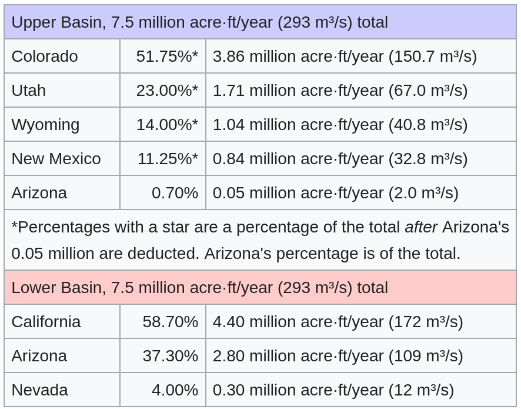

(https://www.cnn.com/2023/01/31/us/california-water-proposal-colorado-river-climate/index.html)
The Colorado River is a critical water source for millions of people and serves as the backbone of the United State's agricultural
infrastructure. However, the over-allocation of water from this river, combined with
the impacts of climate change, has resulted in a doomsday scenario where reservoirs are running out, threatening
the future of the region and the entire country (Nilsen, 2023).
The Colorado River Compact, a legal agreement signed in 1922, first allocated water rights to the seven states in the
South West region (Partlow, 2022). This allocation, however, was based on an overestimation of the river's annual flow. The estimate accounted
for a total discharge of 15 million acre-feet. Modern figures suggest that the total discharge (before climate change) is actually closer to 13 million
acre-feet (Swanson, 2023). Additionally, the region has been plauged by a so-called "prolonged drought" (likely a result of climate
change) and declining water levels due to increased evaporation along the river. These factors are already having significant impacts on
the region's agricultural capacity, with many farmers being forced to leave fields empty (James, 2023).
The Colorado River is so essential because it serves seven states and provides water to over 40 million people (LVVWD, 2023). It also provides water to a
$5 billion agricultural industry that produces over 90% of the country’s winter vegetables and a significant
portion of its fruits and nuts (James,2023). Reservoirs along the Colorado River have not
been full for over two decades, and the situation is expected to worsen in the coming years due to climate
change. This, in turn, has affected and will continue to affect food prices and availability across the entire
country (Swanson, 2023).
The legal response to this crisis has been, so far, a complete failure. States have yet to agree on any changes to the compact (Koch, 2022). To avoid disaster, states must balance the needs of residents and industry. Since agriculture uses the
majority of water from the river, residents cannot be expected to take on the bulk of conservation efforts.
Equally, residents must recognize the importance of the agricultural industry to the entire nation and not force
the issue entirely onto them. Furthermore, lower-basin states, including California and Arizona, will be the
first to receive federal water cutbacks under the current agreement (Nilsen, 2023), despite the fact that they produce a significant portion of the country's food (Koch, 2022).
Should these two states be forced to take on the majority of water conservation efforts, the nation as a whole will likely
experience significant food shortages and sharp price increases.
Potential solutions include improving water usage efficiency through conservation efforts such as drip
irrigation, investing in technologies such as desalination, and exploring alternative farming methods like
hydroponics (Boylan, 2020) (ScienceDirect, 2023). However, the truth of the matter is that the issue cannot be solved without deep conservation efforts. In order to
achieve these conservation goals, existing legislation must be overhauled in order to more fairly and equitably
distribute water allocations and conservation efforts across the seven affected states. As you can see from the simulation above, balancing the river's water allocation is extremely difficult. Introducing conservation measures leads to negative economic, residential, and agricultural impacts.
The Colorado River water crisis is a serious issue that threatens the future of the entire South West region and
requires immediate attention from all involved stakeholders. The impacts of climate change, outdated water allocation
policies, and rapid population growth / urban development are placing significant strain on the river's limited resources. If the
crisis is not addressed comprehensively and collaboratively, the situation will only worsen, negatively
impacting the region's economy and food supply and leading to long-term sustainability concerns for the entire nation.
This simulation is based upon real world data pertaining to the Colorado River crisis. The total water supply initiates at 13 million acre-feet, which is what current calculations estimate the river's actual discharge to be (Kuhn, 2023). By the year 2050, the river's total discharge is estimated to shrink by as much as 35% due to climate change (Wines, 2014). For the purpose of this simulation we are assuming a worst-case scenerio where the total water supply shrinks by 35% linearly. In the real world, however, it is unlikely that this shrinking will occur linearly. The effects of climate change will result in large fluctuations in the annual water supply averaging to a 35% reduction by 2050. However, predicting these exact fluctuations is out of the scope of this simulation. Water usage statistics for each state have been taken from the following allocation chart:
(https://en.wikipedia.org/wiki/Colorado_River_Compact)
The simulation will also demonstrate how changes impact food security, economic growth, and residential capacity. Adjusting the water usage of California and Arizona (which together account for a significant sum of the nation's agricultural infrastructure) will affect food security. This is calculated using the following formula:
(Simulated Arizona Water Usage + Simulated California Water Usage) / 7.25
The current total water usage of both states is 7.25 million Acre-feet per year, so the number 7.25 is used to represent 100% agricultural capcity.
The formulas for economic growth and residential capacity are somewhat over-simplified, but provide a very accurate overview of the situation. Essentially, as the total water supply and usage decreases economic growth and residential capacity shrink linearly. Simply put: less water = less money/people.
Boylan, C. (2020, November 9). The future of farming: Hydroponics - PSCI. Princeton University. Retrieved February 2, 2023, from https://psci.princeton.edu/tips/2020/11/9/the-future-of-farming-hydroponics
Desalination. Desalination - an overview | ScienceDirect Topics. (2023). Retrieved February 2, 2023, from https://www.sciencedirect.com/topics/earth-and-planetary-sciences/desalination
James, I. (2023, February 1). Battling to avoid massive water cuts, California offers proposal on Colorado River Crisis. Los Angeles Times. Retrieved February 1, 2023, from https://www.latimes.com/environment/story/2023-02-01/california-offers-proposal-on-colorado-river-crisis
Koch, N. (2022, December 26). Arizona is in a race to the bottom of its water wells, with Saudi Arabia's help. The New York Times. Retrieved February 2, 2023, from https://www.nytimes.com/2022/12/26/opinion/arizona-water-colorado-river-saudi-arabia.html
Kuhn, E. (2023, March 3). California and Its Neighbors Are at an Impasse over the Colorado River. Here’s a Way Forward. Retrieved March 12, 2023, from https://www.governing.com/now/california-neighbors-impasse-colorado-river-way-forward
LVVWD. (n.d.). Drought and conservation measures. Retrieved February 1, 2023, from https://www.lvvwd.com/conservation/measures/index.html
Nilsen, E. (2023, February 1). California floated cutting major southwest cities off Colorado River water before touching its agriculture supply, sources say. CNN. Retrieved February 1, 2023, from https://www.cnn.com/2023/01/31/us/california-water-proposal-colorado-river-climate/index.html?utm_term=link&utm_content=2023-01-31T23%3A28%3A02&utm_source=twCNN&utm_medium=social
Partlow, J., & Brulliard, K. (2022, August 17). U.S. announces more water cuts as Colorado River Hits Dire Lows. The Washington Post. Retrieved February 1, 2023, from https://www.washingtonpost.com/climate-environment/2022/08/16/colorado-river-bureau-of-reclamation/
Swanson, C. (2023, January 25). Can the west save the Colorado River before it's too late? here are 8 possible solutions. The Denver Post. Retrieved February 2, 2023, from https://www.denverpost.com/2023/01/04/colorado-river-water-cuts-crisis-solutions/
Wines, M. (2014, January 5). Colorado River Drought Forces a Painful Reckoning for States. The New York Times. Retrieved March 12, 2023, from https://www.nytimes.com/2014/01/06/us/colorado-river-drought-forces-a-painful-reckoning-for-states.html
Website made by Ber Gutman (2023) for AG421.
Code: https://github.com/bergutman/cr + Open Source code from Chart.js